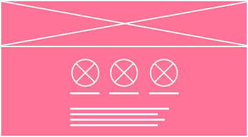
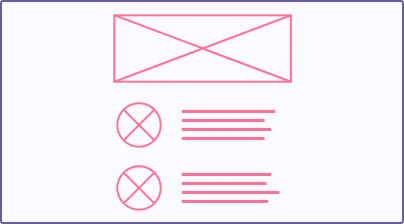

3Low-Fi.
This is the rapid prototyping stage. All the sketching, wireframing, and storyboarding happens here.

5Hi-Fi.
A high-fidelity prototype is created for testing. This is where majority of pre-build user-testing occurs. Depending on feedback, it might be time to step back a few steps and iterate.

8Launch.
We have liftoff!